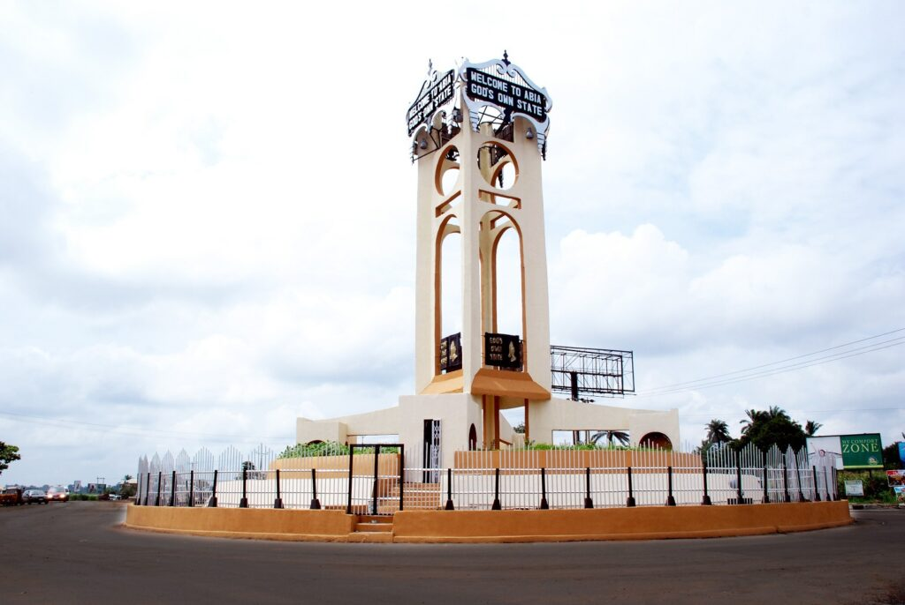

Hello! My name is Francis Uba Ezieme, and I’m a student in the WDD 131 course. I’m passionate about web development, photography, gaming, and traveling. My goal is to build strong web development skills in HTML, CSS, and JavaScript.

Hello! My name is Francis Uba Ezieme, and I’m a student in the WDD 131 course. I’m passionate about web development, photography, gaming, and traveling. My goal is to build strong web development skills in HTML, CSS, and JavaScript.
Abia State is known for its rich cultural heritage and economic activities. Its capital is Umuahia, and Aba serves as the commercial hub. The state thrives on agriculture, crafts, and local industries.
